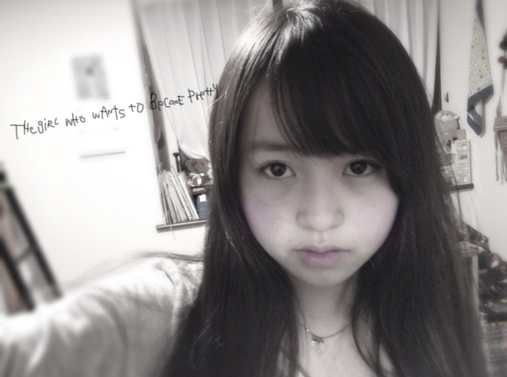

| 2012/01 25 Wed | 59回目*marika |
まりかじゃぁい。
いつも読んでくださってる方、
初めて読んでくださった方、
コメントしてくださった方、
ありがとうございます:D
今日はいけるとこまで質問お答えするぜ。!!
............................
・ベビたんのほっぺの中には何が入ってるの?((←
*****
夢がいっぱい詰まってるのだ!!
....ちて←
・ベビたん文系か～！！
おれは理系だ！！
数学と理科、教えてあげようか？！笑
そのかわり、国語教えて！！特に古文！！
*****
ん〜;3!!
おしえて〜><
わたしゃ社会が好きや。
古文なんて難しいよ〜もうっ
・本当にまゆゆが乃木坂46に
完全移籍したら、どんな気持ちですか？
*****
まゆゆさんはAKB48のままでいてほしいな><
・もうすぐ誕生日ですが、
プレゼントでもらって嬉しい物って、
どう言う物ですか？
良かったら、参考にしたいので、
教えて頂けたら嬉しいです。
*****
何でもうれしいですよー♡
私に似合うものっ
とかかな??
でも、その気持ちだけでもうれしいです><
本当にありがとうございます><
・コメントって全部読んでるの(･･)？
・過去のｺﾒﾝﾄとか見てるの??
*****
もしかしたら見逃してるのが
あるかもしれません><
でも、ケータイ見るたびチェックしてます♡
そして過去のも読むことあります♡
・まりりんは絶叫マシンは好きな方なの？
一番好きな絶叫ってなにかな？
*****
ジェットコースターたのっし----ですよ:3
お化け屋敷とかぜっったいムリやけど
絶叫マシンはいける^^☆☆
・最後にひめたんの写真ありがとう(v^-ﾟ)
ひめたん、何見てるの？
・ひめたんは、今おしゃれに興味があるのかな？？？
*****
ひめかっぽいのって女の子らしいのやから
お化粧品をかいてみたのん^^えへ
・個別何枚とろうーーーー
何部がいいーーーー？
*****
おまかせ:-Dしますっ♡
・私よりも頭のいい子が私と一緒に
中学受験をして残念な事に
２人とも落ちてしまいました
私は全然ショックではなかったのですが
友達は塾の曜日を変えてまだ会えていません
今度定着度テストで会うことになっています
なんて声をかければいいですか？
*****
とても友達想いなんですね^^*
今まで通りで良いと思います。
相手の空気に合わせることも大事だと思います><
その子から話しかけてくれたら、
その子のテンションに合わせれば良いと思う。
自分だったらそうします。
すごく簡単な答え方になってしまいましたが
そんなに悩む必要ないんじゃないかな?
お互い励まし合って前に進む!!
受験がんばってください!!
応援してます。
・ナガシマスパーランドのスチールドラゴン
って乗ったことありますか？
*****
えー!!絶叫マシンですか??
それはぜひ乗りたいな笑
・やっぱりべびたんの加工好きっ＊
うま過ぎて尊敬ーっ！真似していい？
*****
やばいですうれしすぎます//////
あーあーてれちゃうよ。
まりかでれでれだよ。
うん♡いいよっ:D!!
・乃木坂メンバーの中で一番かわいい！
って思うの誰？
*****
ねねとひめかとみなみとあすかと..........
１人に絞るのは不可能だっ←
・べびたんが握手会でしてほしい話題って？
*****
え〜*^^*
ん〜.....
私のどこを好きになったか教えて←
調子のった笑^^てへぺろ
・パーマ当ててる男ってどないかな？
*****
パーマ!!
かっくいい〜:Dきらきら
なんかおしゃれだなって思います*
・まりかは焼肉なら何が一番好き？俺はハラミ！！
*****
タン塩でしょう!!
カルビをサンチュに巻いて食べるの最高でしょう!!
この前メンバーと行った時ハラミ食べました:)
いや〜おいしかったわあぁ♡じゅるり
・ツノヘアーって発想が面白いね
このヘアアレンジってファッション誌とかに
載ってたの？それとも自分で考えたの？
*****
だいぶ前のBloGでヘアアレンジのリクエストで
いただいたんです~^^
ツノヘアー気に入っちゃた♡**
ちなみに今までやったのは
3回目 ポニーテール
17回目 ハーフアップポニーテール
19回目 ツインテール
28回目 お団子
53回目 ハーフアップツインテール
56回目 ゆる巻きサイド
57回目 ツノヘアー
けっこうアレンジした!!
興味があればぜひ見ちゃってください:^)
・最近映画館で映画見た？
*****
見てない><
AKBさんのドキュメンタリーを見て
たくさん学びたいです。
・僕は、家の事情で、個別握手会には行けなくて、
全握しか行けないんだけど、それでもいい？
*****
うんうん!!まってる!!
早く会いたいね^^♡
・俺のコメントを読んでベビたんが少しでも
元気になってくれたら嬉しいけど。
俺のコメント面白いですか？（笑）
*****
もう元気元気!!笑
うん^^
みなさんからのコメント、
うれしくてにやにや,
じゃなくてにこにこして読んでます♡
・待ち受けまだー？(笑)
でら楽しみだから待ち遠しい
*****
待たせてしまっててごめんなさいぃx(
最新だとツノと下の方でツインが
お気に入りなのですが
ダウンで撮った方がいいかな??
・ナゲットソースですが『バーベキュー派』ですか？
それとも、『マスタード派』ですか？
*****
断然マスタード派!!
・ﾌｧﾝﾚとか送って､大丈夫ですか??
*****
うれしい♡
何回も読んじゃうもんね〜
・ベビたんってお喋りすき？:P
*****
うん!!
自分おしゃべりやしね^^
ぺらっぺらぺらっぺらよ笑
・ｳﾁゎ寒いの苦手なんですけど、
寒さ対策とかしていたら教えてください;)
*****
私はユニクロ様のヒートテック二枚で
寒さをしのいでます!!笑
・果たして僕のコメントはベビたんに
何かを与えられているのでしょうか？？？
*****
笑顔と元気とほかほかあったかい気持ち^^♡へへ
・いくちゃんに書いてもらった似顔絵ないのー？
*****
ちょと探してみる〜!!
なかったらまた描いてもらおうか笑
・お気に入り絵文字知りたいなぁ＼^^／
*****
ハート

イナズマ

キッス

かわゆいよねっ:D
・握手会の時は、握手券をまとめて出した方がいい？
それとも1回ずつ回った方がいい？
*****
おまかせします〜^^にひにひ
・雪かきしたことある？
*****
雪かきする時すごい声出ますよね笑
「ふんぬあああぁあぁっっいよっしゃあぁぁ」
スコップで雪を後ろに投げれた瞬間の
爽快感!!!!きらきら
............................
写真のアプリはぜひ57回目参照してください=3

下北FM☆26日
とまととひめかと頑張ってきます^^へへへ
みなさんつるんすてんしませんでしたか><
私はなんとかバランス保ちました笑
では0時過ぎたので
今日も一日頑張りまりか〜☆
ベビたん*****bA by marika